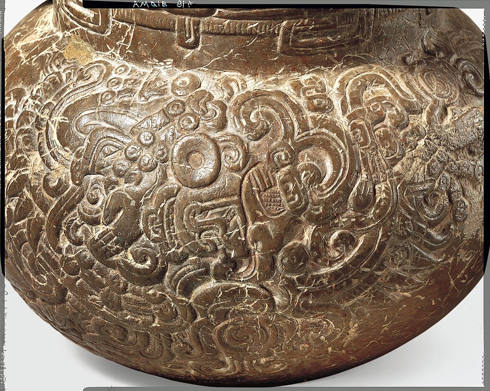
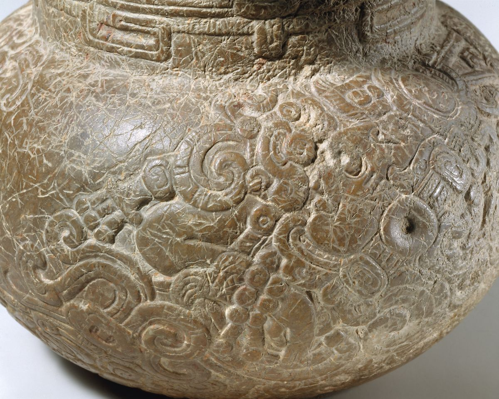

-

- 
- 
Spouted Jar
mid-1st century B.C.–A.D. 1st century
This spouted vessel is one of the most elegantly sculpted stone containers in the corpus of Maya art. Its form with the vertical spout parallel to the central axis of the main chamber is known from the late 1st millennium B.C. and is especially related to chocolate consumption. The ancient Maya would inject air into the spout so that the bubbling effect would produce a frothy spume on the surface of the savory chocolate drink.
Carved from indurated (compacted) limestone, the vessel is a rare example of such a spouted container in stone. The neck of the vessel contains a “sky-band,” a motif in Maya art indicating a celestial location, that has t-shaped hieroglyphs deciphered as IK, “wind” separated by diagonal lines. The globular body of the vessel is perfectly symmetrical and the bottom of the chamber is leveled off for ease of storage.
On either side of the spout on the body of the vessel are ornate deities floating in smoky volutes. The specificity of these figures contrasts with the repetitive abstraction of the sky band rim decoration. The first supernatural, to the proper right of the spout, has avian characteristics including wings, a buccal mask of a protruding beak and downturned mouth, though human-like hands and feet are clearly visible on its twisted limbs. The avian deity faces downward, a common convention for ancestors looking down on living rulers from above in sculpture from the Late Preclassic (ca. 300 B.C.–A.D. 250) and Early Classic Period (ca. A.D. 250–550). A hieroglyphic phrase composed of an open hand holding a sign for k’in “sun” is found directly above the deity’s head, signaling that it is a specific, named individual.
The second figure, on the proper left side of the spout, has more human-like characteristics, with symbols associated with the Maya Maize God, including: the distinguished profile with sloping forehead, the two parallel lines on the cheek, the protruding tooth from the mouth, and jade jewels adoring the wrists, ankles, pectorals, and loin cloth. Another name hieroglyph appears above the forehead of this Maize Deity as he faces up.
A hieroglyphic inscription appears on the spout; while not fully deciphered, it contains a dedication of the vessel. The hieroglyphs, which mention the dedication of the stone bowl (u-K’AL-wa TUUN) and mentions the name of one of the depicted gods, are in a style consistent with Early Classic texts, approximately the 4th century, according to epigrapher Stephen Houston. Houston also identified that the Early Classic artist of this vessel executed the images on the sides of the pot in a style more consistent with earlier, archaic images from the Preclassic period.